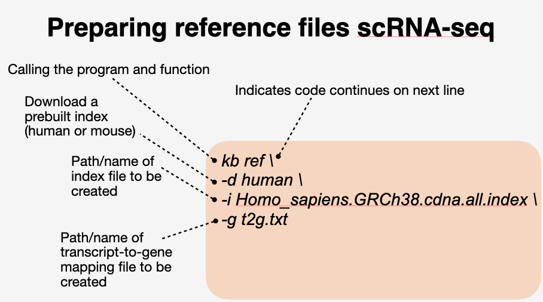
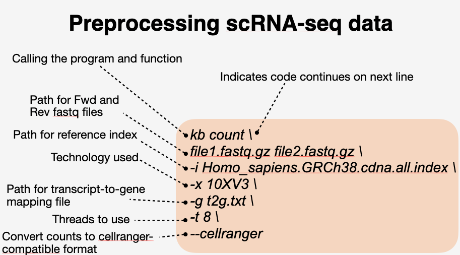

![]()
### Load R packages
library(here)
library(tidyverse)
library(DropletUtils)
library(Seurat) # a huge, powerful, and popular library for analyzing single cell genomic data
library(Matrix)
library(scales)
library(rjson)
library(R2HTML)
library(DT)
library(scater) # quality control and visualization for scRNA-seq data
library(scran) # for low level processing of scRNA-seq data
library(tensorflow)
library(cellassign)
library(SingleR) # automated cell type annotation ('label transfer') using reference data
library(celldex) # a large collection of reference expression datasets with curated cell type labels for use with SingleR package
library(pheatmap)Preparing reference files for scRNA-seq
### create conda env for mapping reads
conda create --name kb
conda activate kb
pip install kb-python### navigate to directory and active kb environment 230907_DIY_Transcriptomics/data/pbmc_1k_raw
kb ref -d human -i Homo_sapiens.GRCh38.cdna.all.index -g t2g.txt
Mapping reads for scRNA-seq data
kb count pbmc_1k_v3_S1_mergedLanes_R1.fastq.gz pbmc_1k_v3_S1_mergedLanes_R2.fastq.gz -i Homo_sapiens.GRCh38.cdna.all.index -x 10XV3 -g t2g.txt -t 8 --cellranger
Imporing data into R
### Load raw matix
raw_mtx <- readMM(here(
"data", "230907_DIY_Transcriptomics", "pbmc_1k_v3_scRNAseq_processed",
"counts_unfiltered", "cellranger", "matrix.mtx"
))
head(raw_mtx)
### load genes
genes <- read.csv(here(
"data", "230907_DIY_Transcriptomics", "pbmc_1k_v3_scRNAseq_processed",
"counts_unfiltered", "cellranger", "genes.tsv"
), sep = "\t", header = FALSE
)
head(genes)
# add ensemble gene_ids to the data matrix as rownames
rownames(raw_mtx) <- genes[,1]
### add cell barcodes as column names
colnames(raw_mtx) <- read.csv(here(
"data", "230907_DIY_Transcriptomics", "pbmc_1k_v3_scRNAseq_processed",
"counts_unfiltered", "cellranger", "barcodes.tsv"
), sep = "\t", header = FALSE
)[, 1]Step5: Quality
# use DropletUtils package to get probability that each barcode is a cell
out <- emptyDrops(raw_mtx)
# set threshold probability for calling a cell
keep <- out$FDR <= 0.05
# use threshold to remove empty drops
keep[is.na(keep)] <- FALSE
filt_mtx <- raw_mtx[,keep]
# write out filtered results
write10xCounts(
here("data", "230907_DIY_Transcriptomics", "pbmc_1k_v3_scRNAseq_processed","counts_filtered"),
gene.symbol = genes[,2],
filt_mtx, overwrite=TRUE) Basic Quality assessment
### R script that contains the bc_rank_plot and print_HTML functions we'll use to produce a QC report
source(
here("data", "230907_DIY_Transcriptomics", "functions.R")
)
### load filtered mtx
filt_mtx <- readMM(
here("data", "230907_DIY_Transcriptomics", "pbmc_1k_v3_scRNAseq_processed"
, "counts_filtered", "matrix.mtx")
)
### load run info from JSON files produced by Kb
kb_stats <- c(
fromJSON(file = here(
"data", "230907_DIY_Transcriptomics", "pbmc_1k_v3_scRNAseq_processed",
"inspect.json")),
fromJSON(file = here(
"data", "230907_DIY_Transcriptomics", "pbmc_1k_v3_scRNAseq_processed",
"run_info.json"))
)
# determine chemistry version
tech <- grep("10X(.*)", strsplit(kb_stats$call, "\\s")[[1]], value=T)
# make a nice/simple table that summarizes that stats
seq_stats <- data.frame(
stat = c(
"Sequencing technology", "Number of reads processed", "% reads pseudoaligned", # get sequencing/alignment stats
"% reads on whitelist"),
value = prettyNum(
c(tech, kb_stats$n_processed, kb_stats$p_pseudoaligned,
round(kb_stats$percentageReadsOnWhitelist,2)), big.mark = ",")
)
# calculate cell stats and save to df
p_cnts_in_cells <- round((sum(filt_mtx)/sum(raw_mtx))*100, 2)
med_cnts_cell <- median(colSums(filt_mtx))
med_genes_cell <- median(apply(filt_mtx, 2, function(x) sum(x >= 1)))
tot_genes_detected <- sum(rowSums(filt_mtx)>=1)
cell_stats <- data.frame(
stat = c(
"Estimated number of cells", "% counts in cells",
"Median counts per cell", "Median genes per cell", "Total genes detected"
),
value = prettyNum(
c(ncol(filt_mtx), p_cnts_in_cells, med_cnts_cell,
med_genes_cell, tot_genes_detected), big.mark = ","
)
)
# get rank stats
stats <- barcodeRanks(raw_mtx)
# load raw cells
raw_cells <- read.csv(
here("data", "230907_DIY_Transcriptomics", "pbmc_1k_v3_scRNAseq_processed",
"counts_unfiltered", "cellranger", "barcodes.tsv"), header = FALSE, sep ="\t"
)[,1]
# load filtered cells
filt_cells <- read.csv(
here("data", "230907_DIY_Transcriptomics", "pbmc_1k_v3_scRNAseq_processed",
"counts_filtered", "barcodes.tsv"), header = FALSE, sep ="\t"
)[,1]
# create barcode rank plot png
bc_rank_plot(
stats = stats,
raw_cells = raw_cells,
filt_cells = filt_cells,
save = here(
"data", "230907_DIY_Transcriptomics", "pbmc_1k_v3_scRNAseq_processed",
"counts_filtered", "barcode_rank.png"
)
)
# output a HTML summary of the run
print_HTML(
seq_stats = seq_stats,
cell_stats = cell_stats,
dir = here(
"data", "230907_DIY_Transcriptomics", "pbmc_1k_v3_scRNAseq_processed",
"counts_filtered"
),
sample_id = NULL
)create Seurat object
datadir <- here(
"data", "230907_DIY_Transcriptomics", "pbmc_1k_v3_scRNAseq_processed",
"counts_filtered"
)
list.files(datadir)
expression_matrix <- Read10X(
datadir,
gene.column = 2,
cell.column = 1,
unique.features = TRUE,
strip.suffix = FALSE
)
### create seurat object
pbmc_1k_seurat <- CreateSeuratObject(
counts = expression_matrix, min.cells = 3
) %>%
NormalizeData(verbose = FALSE) %>%
FindVariableFeatures(verbose = FALSE)Calculate the percentage of mitochondrial reads
# NOTE: change 'MT' to 'mt' for mouse
pbmc_1k_seurat[["percent.mt"]] <- PercentageFeatureSet(
object = pbmc_1k_seurat, pattern = "^MT-"
)
# Make violin plot
VlnPlot(
pbmc_1k_seurat,
c("nCount_RNA", "nFeature_RNA", "percent.mt"),
pt.size = 0.1
)
# filter data
pbmc_1k_seurat <- subset(pbmc_1k_seurat, subset =
nCount_RNA < 20000 &
nCount_RNA > 1000 &
nFeature_RNA > 1000 &
percent.mt < 20)
# NOTE: you need to be careful when setting cut-offs that you're not losing unique cell populations
# another QA plot
ggplot(pbmc_1k_seurat@meta.data, aes(nCount_RNA, nFeature_RNA)) +
geom_point(alpha = 0.7, size = 0.5) +
labs(x = "Total UMI counts per cell", y = "Number of genes detected")
# Potential things to look for in the type of QA plot produced above:
# 1. Data points in the bottom LEFT hand quadrant = low genes and UMIs per cell. May represent poor quality cells.
# 2. Data points in the bottom RIGHT hand quadrant = low genes but high UMIs per cell. These could be dying cells, but also could represent a population of a low complexity celltype (i.e red blood cells).Cluster identification
# Plot UMAP ----
# it is standard practice to apply a linear transformation ('scaling') before PCA. For single cell data this includes:
# 1. Shifting the expression of each gene, so that the mean expression across cells is 0
# 2. Scaling the expression of each gene, so that the variance across cells is 1
# This gives equal weight in downstream analyses, so that highly-expressed genes do not dominate
pbmc_1k_seurat <- ScaleData(pbmc_1k_seurat, verbose = FALSE)
pbmc_1k_seurat <- RunPCA(pbmc_1k_seurat, npcs = 40, verbose = FALSE)
pbmc_1k_seurat <- RunUMAP(pbmc_1k_seurat, reduction = "pca", dims = 1:40)
pbmc_1k_seurat <- FindNeighbors(pbmc_1k_seurat, reduction = "pca", dims = 1:40)
pbmc_1k_seurat <- FindClusters(pbmc_1k_seurat, resolution = 0.5)
DimPlot(pbmc_1k_seurat, reduction = "umap", split.by = "orig.ident", label = TRUE)# Find cluster-specific genes ----
# generally speaking there are three main ways you can find cluster-specific marker genes with Seurat
# 1. 'FindMarkers' to compare a select cluster to all other cells not in that cluster
# 2. 'FindAllMarkers' to compare EACH cluster to all other cells
# 3. 'FindConservedMarkers' to identify genes conserved (shared) between two defined clusters
# We'll start with FindMarkers, since it allows you to choose exactly which cluster you'd like to focus on.
cluster1.markers <- FindMarkers(pbmc_1k_seurat, ident.1 = 1, min.pct = 0.25)
cluster1.markers$pct.diff <- cluster1.markers$pct.1 - cluster1.markers$pct.2
cluster1.markers.df <- as_tibble(cluster1.markers, rownames = "geneID")
# Export DEGs for each cluster (ranked by avg_logFC > 0.5)
myTopHits_cluster1 <- cluster1.markers.df %>% arrange(desc(avg_log2FC))
myTopHits_cluster1 <- dplyr::slice(myTopHits_cluster1, 1:20)
# you can make this list of genes into an interactive table
datatable(myTopHits_cluster1,
extensions = c('KeyTable', "FixedHeader"),
caption = 'Table 1: Cluster 1 genes',
options = list(keys = TRUE, searchHighlight = TRUE, pageLength = 10, lengthMenu = c("10", "25", "50", "100"))) %>%
formatRound(columns=c(2:11), digits=2)
# plot genes of interest on UMAP
FeaturePlot(pbmc_1k_seurat,
reduction = "umap",
features = c("IGHM"),
pt.size = 0.4,
order = TRUE,
#split.by = "orig.ident",
min.cutoff = 'q10',
label = FALSE)
# now let's try with FindAllMarkers
pbmc.1k.markers <- FindAllMarkers(pbmc_1k_seurat, only.pos = TRUE, min.pct = 0.25, logfc.threshold = 0.25)
# let's take the top 10 marker genes for each cluster and plot as a heatmap
top10 <- pbmc.1k.markers %>%
group_by(cluster) %>%
top_n(n = 10, wt = avg_log2FC)
DoHeatmap(pbmc_1k_seurat, features = top10$gene)Assign identity to cell clusters
Integration of multiple samples
Reference
SessionInfo
sessionInfo()